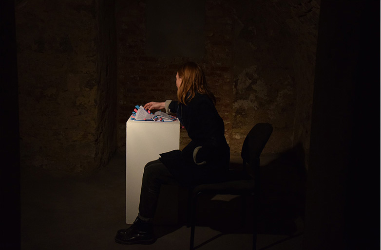
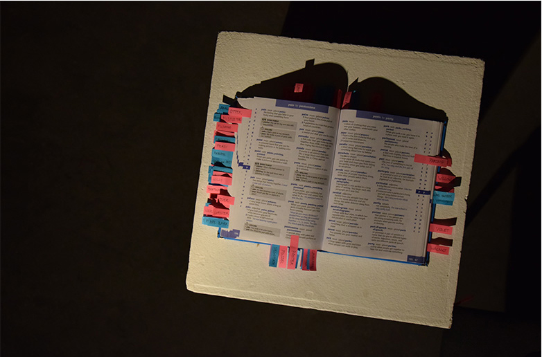
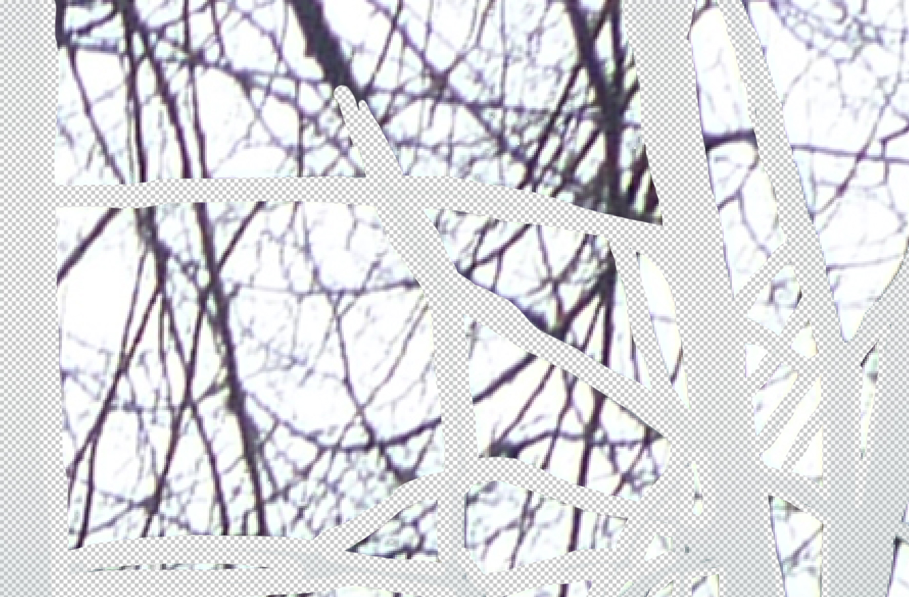
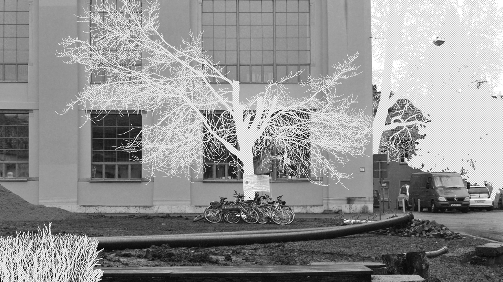
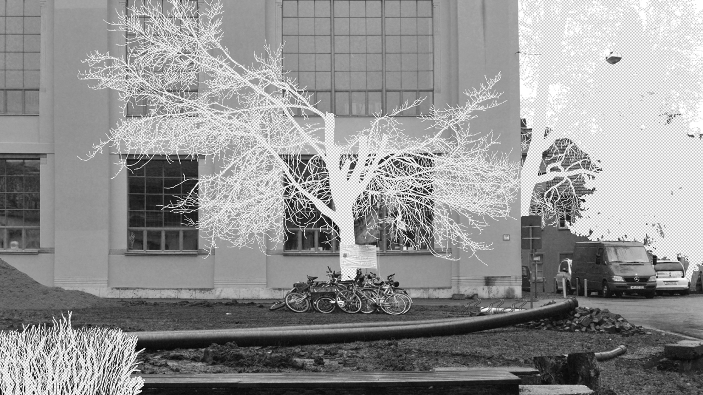
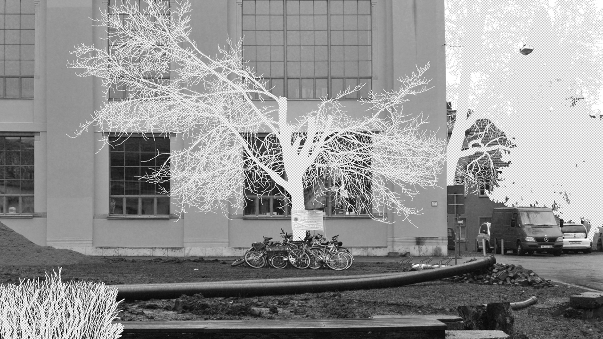

Deleted Surroundings
With a shifting society our vocabulary changes. Dictionary lists are introduced with new words and others are taken out. In the last Oxford Junior dictionary nature-related words were taken out, to be replaced by technical and organisational terms. Because “this reflects our modern society better”. How do we experience a world in which we take this literally and thus (technically) remove natural words from our perception?



 

